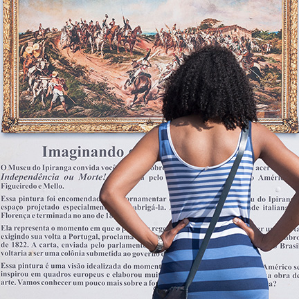
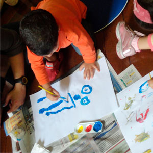
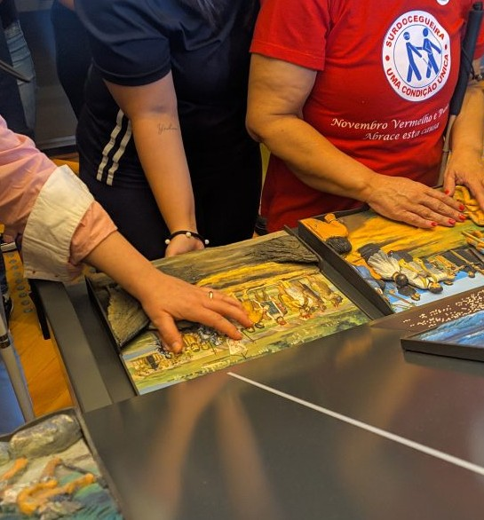
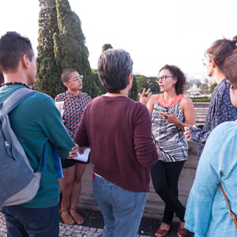

EDUTATIVO
A Ação Educativa do Museu do Ipiranga está organizada em três eixos que abrangem visitas, formações e outras propostas relacionadas aos diferentes perfis de público da instituição. Conheça abaixo quais são eles!
públicos escolares
Propostas educativas voltadas para um dos públicos mais próximos do Museu do Ipiranga: professores e alunos de diversas faixas etárias e etapas de escolarização.

públicos inclusivos
Ações educativas voltadas para ampliar o acesso e a participação de diferentes públicos ao Museu e de acordo com suas especificidades, como pessoas com deficiência e em situação de vulnerabilidade social, entre outros.
públicos espontâneo
Atividades preparadas especialmente para os públicos que visitam o museu de forma espontânea, como famílias, turistas e públicos em geral.